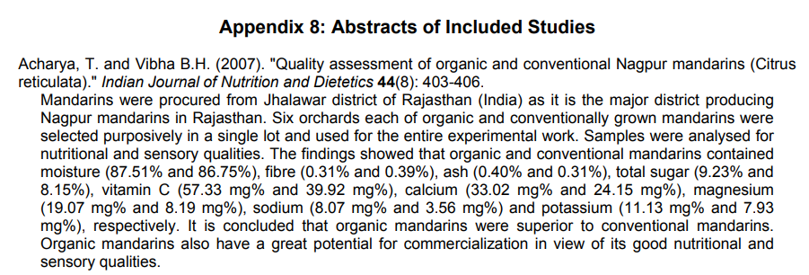

Articles
Article 1 - P. Navarro, Pérez-López A.J, Mercader M.T, Carbonell-Barrachina A.A, Gabaldon J.A.Antioxidant Activity, Color, Carotenoids Composition, Minerals, Vitamin C and Sensory Quality of Organic and Conventional Mandarin Juice, cv. Orogrande pag.9 vol.17: 241 (2011)

Article:
Sempre posem primer els autors pel cognom i les inicials del nom, després l'any entre parèntesis, el títol, després el nom de la revista abreujat, el volum i les pàgines que té.
Es va observar una diferència significativa en el contingut de vitamina C entre els dos tipus de mandarina. Les mostres ecològiques van presentar una concentració mitjana de 419 ± 25 mg/L, significativament més gran que la de les mandarines convencionals (366 ± 18 mg/L), com indiquen les lletres diferents assignades per l'anàlisi estadística.
Article 2 - Ordoñez-Gómez, Reátegui-Díaz,Villanueva.T. Títol: Total polyphenols and antioxidant capacity of peel and leaves in twelve citrus

Com podem veure en la taula, els extractes metanòlics de les pells de mandarina comuna, Cleopatra i riu or no van mostrar diferències significatives en l’activitat antioxidant davant del DPPH, però davant de l’ABTS+ la mandarina Cleopatra va presentar una capacitat superior a la del riu or. En les fulles, la mandarina comuna va mostrar més activitat davant del DPPH que el riu or, mentre que la Cleopatra va ser superior davant de l’ABTS+.
Article 3 - Navarro.P., López Pérez A.J., Mercader M.T., Carbonell Barrachina. A.A., Gabaldon.J.A. Títol: Effects of organic farming on minerals contents and aroma composition of Clemenules mandarin juice

A la taula 4 ens parla sobre els efectes de la cultivació orgànica en el contingut de minerals dels sucs de les mandarines clemenules. Podem observar els valors de minerals tant com a la convencional com a l'ecològica com ho són el calci, magnesi, potassi, sodi, ferro, coure, manganès, etc. Se'ns dóna a entendre que la mandarina clemenula ecològica té més minerals que la convencional. La Taula 5 analitza els compostos volàtils responsables de l'aroma del suc de mandarina Clemnules, comparant el comportament dels sucs orgànics i convencionals a l'inici de l'emmagatzematge (dia 0) i després de 60 dies. Els resultats demostren que els sucs de cultiu orgànic presenten una concentració total més gran de compostos aromàtics, destacant el δ-limonè, mircè i α-pinè, i que, després de 60 dies, conserven una quantitat superior respecte als convencionals.
Article 4 - Dr. Dangour. A Ms. Dodhia. S Ms. Hayter. A Ms. Aikenhead. A Dr. Allen. E Dr. Lock. K Professor Uauy. R. Data de publicació: July 2009. Comparison of composition (nutrients and other substances) of organically and conventionally produced foodstuffs: a systematic review of the available literature
A continuació presento l'article 4. Aquest paràgraf comenta la comparació entre la mandarina convencional i ecològica tipus Nagpur. Es van fer estudis en camps de cultius a l'Índia per demostrar les qualitats nutritives de la mandarina Nagpur i es va arribar a la conclusió que la mandarina ecològica té més nutrients en comparació amb la convencional.